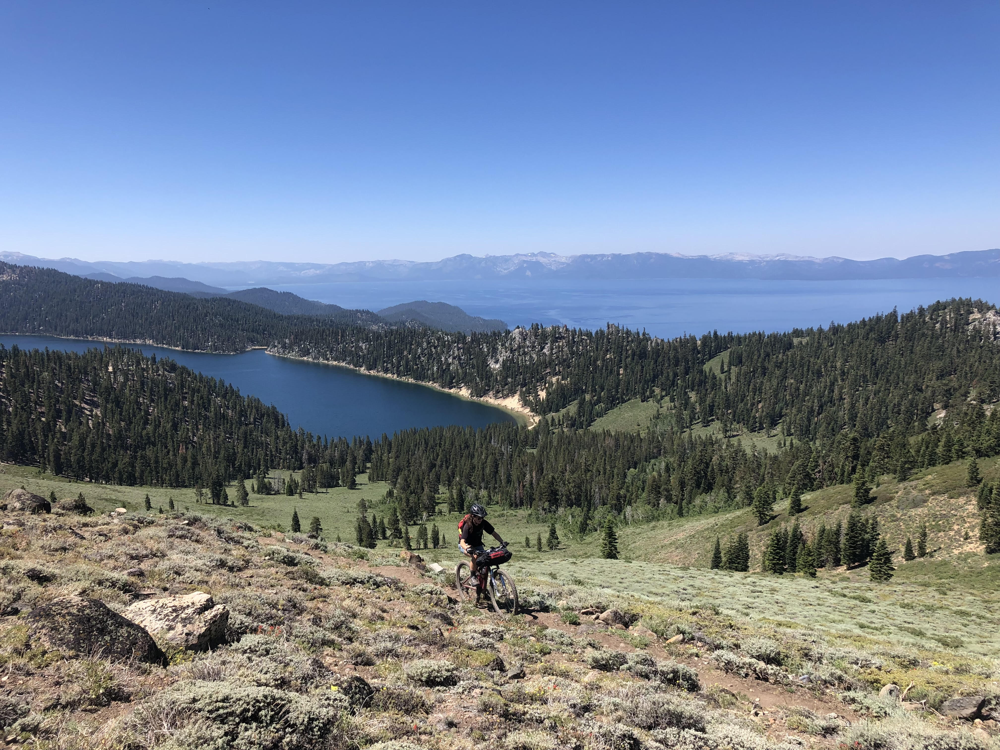

About


I enjoy analyzing and communicating data from the energy sector to tell stories about how the energy sector intersects with emissions, ambient air quality, and environmental justice. I use both statistical analysis (including statistical machine learning algorithms) and spatial analysis to do so. I prefer to work in the R language and am in the process of populating the projects tab of this website with more of my recent work.
Graduate School
I am currently a second-year Master’s Student at the Bren School of Environmental Science & Management at the University of California, Santa Barbara. During my time at Bren, I have focused my coursework on data science while officially specializing in Corporate Sustainability and Energy & Climate. My main focus right now is finishing up my year-long master’s group project, which aims to analyze the parity between potential supply and demand of hydrogen as an alternative fuel source in California. Our client for the project is the California Governor’s Office of Business & Economic Development and I serve as both a Data Analyst and Financial Manager.
Environmental Protection Agency


During the summer of 2023, I interned at the Environmental Protection Agency federal headquarters in Washington, DC. More specifically, I worked in the Emissions Monitoring Branch of the Clean Air Markets Division of the Office of Air and Radiation. While there, I completed analyses and visualizations of power sector data for the Clean Air Markets Division and Emission. For instance, I analyzed the number of electricity-generating units (EGUs)in US power plants that are associated with complex and multi-stack configurations to inform how emissions from these EGUs should be handled in federal policies like the Good Neighbor Rule. I also spent time drafting a public webpage to communicate how consumption-based electricity generation rates differ from production-based rates in the EPA’s Emissions and Generation Integrated Resource Database (eGRID) by developing interactive visualizations.
San Francisco Estuary Institute

Before starting my graduate program, I worked as an Environmental Analyst at the San Francisco Estuary Institute (SFEI) for 2.75 years. Not only did I love being back in the East Bay Area (where I grew up), but I also appreciated that the position was a wholesome blend of fieldwork, labwork, and data analysis. My team, the Nutrient Management Strategy, utilized coupled biogeochemical-hydrodynamic modeling and monitoring to understand the current and future health of the San Francisco Bay Area. I was part of the monitoring team and became the field lead of a network of water quality monitoring instruments in the San Francisco Bay called the Moored Sensor Program. This position involved everything from coordinating with US Geological Survey (USGS) collaborators for regular fieldwork to technical troubleshooting of our instruments to QA/QC of the measured data in Python.
Speaking of Python, this was my first introduction to the language, and boy, did I struggle to learn it. It was only with the continued patience and help of my genius supervisor (and many hours on Stack Overflow) that I became proficient in the language. It’s funny to look back on now because I have since fallen in love with data science.
University of Southern California
Before working at SFEI, I attended the University of Southern California (USC) between January 2017-December 2019. I graduated with a Bachelor of Science in Biological Sciences and an emphasis in Marine and Environmental Biology. Not only was I lucky enough to receive a full ride (since I am a first-generation college student from a low-income family), but I also assisted two research labs while there. In the research labs, I helped multiple PhD students study the growth and toxicity of phytoplankton species under various climate conditions. Although I have since steered my career away from this topic, I still love geeking out about phytoplankton and harmful blooms.
Growing Up


I grew up in San Leandro, California and Reno, Nevada. My family moved to Reno right before my sophomore year of high school, which felt like the end of the world as a fifteen year old girl. Little did I know then that living in Reno (45 minutes away from Tahoe) would help me discover a love for the outdoors and send me down the best career path I could imagine.
In 2011, I transferred to a magnet high school, where I took community college courses for dual credit. It was there that I found a mentor in my microbiology course professor; I would not be where I am today without her encouragement, support, and passion! Thanks to her, I began interning at the Desert Research Institute in 2012, where I spent my time meticulously measuring Antarctic krill under a microscope (too bad I did not know about podcasts back then - I could have listened to so many true crime episodes).
After receiving my Associate of Science in 2013, I decided I was ahead of the game and could afford to take a gap year. That year turned into 3.5 years away from academia… I spent the first 2.5 years volunteering with a service program focused on community development; through the program, I traveled across the contiguous US, Alaska, Hawaii, Panama, and Korea and met tons of amazing humans. After coming home, I spent another year working in the service industry and applying to transfer into a university.
Hobbies
In my free time these days, I love to mountain bike, camp, cook, swim, read, and puzzle. In 2020, I went on my first bikepacking trip and fell in love. Since then, I’ve gone on 7 or so multi-day trips with amazing friends in places like Tahoe National Forest, the Lost Coast, Catalina Island, and more. Please enjoy the photos below as we collectively pretend we are in the mountains instead of behind a desk. I also love spending time with my cuddly cat, Lilo.
